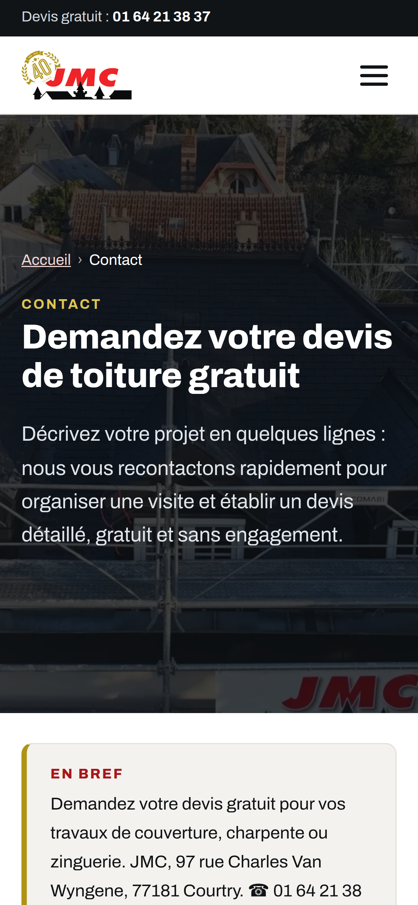

Couvreur-zingueur depuis 1985 · Île-de-France
Votre toiture refaite par
des couvreurs de métier
Couverture zinc et tuiles, rénovation et isolation : la structure et les équipes d'une entreprise de la promotion immobilière, au service de votre maison.
Rénovation et remplacement de toiture
Isolation combles et rampants (RGE)
Fenêtres de toit VELUX et lucarnes
Zinguerie et toiture terrasse
Nettoyage, démoussage et entretien
Copropriétés et maisons neuves
★★★★★4,9/5 · 29 avis Google
Garantie décennale
Visite et devis gratuits01 64 21 38 37
ou en 2 minutes sur
jmccouverture.com
jmccouverture.com

Votre demande de devis
en 2 minutes depuis
votre téléphone
en 2 minutes depuis
votre téléphone